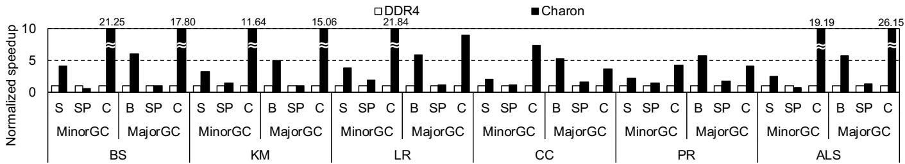
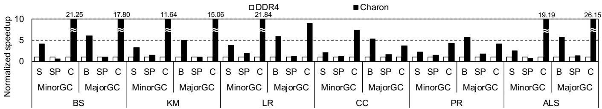
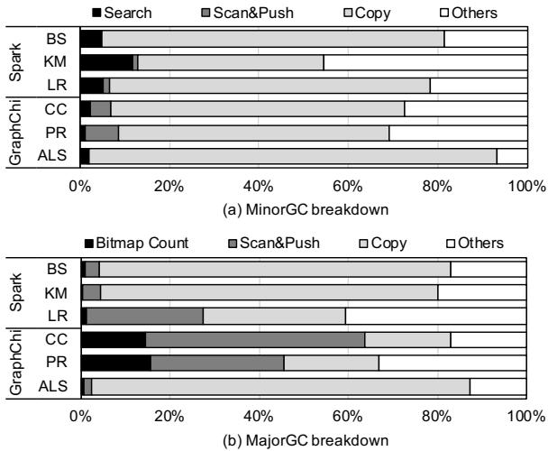
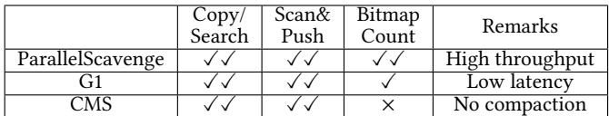
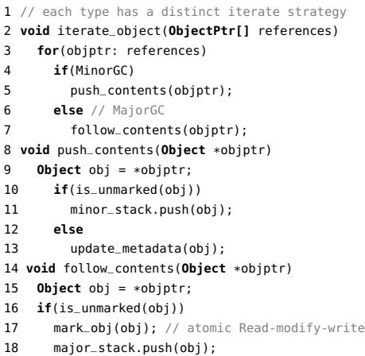
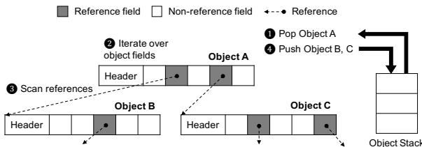
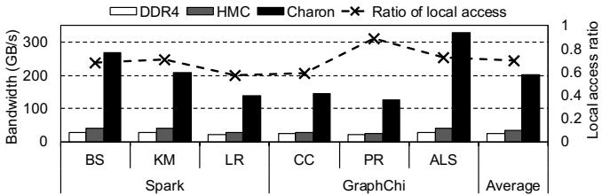
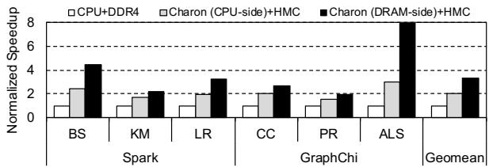

Charon: Specialized Near-Memory Processing Architecture for Clearing Dead Objects in Memory 论文解析¶
0. 论文基本信息¶
作者 (Authors): Jaeyoung Jang, Jun Heo, Yejin Lee, et al.
发表期刊/会议 (Journal/Conference): MICRO
发表年份 (Publication Year): 2019
研究机构 (Affiliations): Sungkyunkwan University, Suwon, Korea, Seoul National University, Seoul, Korea
1. 摘要¶
目的
- 解决垃圾回收（Garbage Collection, GC）在大数据应用中造成的严重性能瓶颈和高能耗问题。传统通用处理器（CPU）在处理GC时效率低下，受限于有限的内存级并行度（Memory-Level Parallelism, MLP）和内存带宽。
- 探索利用新兴的3D堆叠DRAM（如HMC）技术提供的高内部带宽和近内存计算能力，为GC中的关键耗时操作设计专用硬件加速器，以提升吞吐量并降低能耗。
方法
- 关键原语识别：通过对生产级HotSpot JVM的ParallelScavenge GC进行详细性能剖析，识别出在Minor GC和Major GC中占据绝大部分执行时间的关键算法原语。
- Minor GC: Search, Scan&Push, Copy
- Major GC: Scan&Push, Bitmap Count, Copy
- 专用近内存架构设计：提出名为Charon的架构，将上述关键原语的处理单元（Processing Units）部署在3D堆叠DRAM（以HMC为基线）的逻辑层中。
- Copy/Search Unit: 利用HMC的高内部带宽，以256B的大粒度并行发起读写请求，最大化MLP。
- Bitmap Count Unit: 采用一种基于
CountSetBits(begMap-endMap) + CountSetBits(begMap)的优化算法替代原始的逐位扫描，并配备专用的bitmap cache以利用其良好的时间局部性。 - Scan&Push Unit: 预先批量发出所有间接内存加载请求，通过高MLP来掩盖长延迟的随机内存访问。
- 系统集成：通过简单的intrinsic调用（仅需修改37行JVM代码）将这些原语从主机CPU卸载到Charon，最小化对现有软件栈的侵入性。
结果
- 在由8核乱序CPU和4个HMC组成的系统上，使用Apache Spark和GraphChi两大框架进行评估。
- 性能提升：Charon相比基于传统DDR4内存的基线系统，实现了3.29倍的GC吞吐量平均加速比。
- 能效提升：在GC过程中，平均节省了60.7% 的能量消耗。
- 各原语加速效果： | 原语 (Primitive) | 平均加速比 | 最大加速比 | | :--------------- | :--------- | :--------- | | Copy | 10.17× | 26.15× | | Bitmap Count | 5.63× | 6.11× | | Search | 2.90× | 4.09× | | Scan&Push | 1.20× | 1.86× |
- 可扩展性：通过增加HMC数量和对应的处理单元，Charon的GC吞吐量能够有效扩展，克服了传统DDR4系统因内存带宽限制而无法扩展的问题。
 Figure 12: Normalized GC performance of Charon compared with the host CPU-only execution
 Figure 14: Per-primitive speedup analysis (S: Search, SP: Scan&Push, C: Copy, BC: Bitmap Count)
Figure 12: Normalized GC performance of Charon compared with the host CPU-only execution
 Figure 14: Per-primitive speedup analysis (S: Search, SP: Scan&Push, C: Copy, BC: Bitmap Count)
结论
- 将GC的关键原语卸载到3D堆叠DRAM的近内存逻辑层是一种高效且可行的方案。Charon通过专用硬件和高内部带宽的结合，显著提升了GC的性能和能效。
- 相比于完全硬连线的GC加速器，Charon采用的原语级卸载策略具有更好的灵活性和通用性，能够适配多种GC算法（如CMS, G1），并且对软件的改动极小，易于部署。
- 该工作证明了近内存处理（Near-Memory Processing）在解决特定领域（如自动内存管理）的长期性能瓶颈方面具有巨大潜力。
2. 背景知识与核心贡献¶
研究背景
- 垃圾回收 (Garbage Collection, GC) 是 Java 等高级语言的核心特性，能自动管理内存、防止内存泄漏，但会带来显著的 性能开销、高延迟 和 高能耗。
- 在 大数据分析 等内存密集型应用中，GC 开销尤为严重，可占到总执行时间的 50% 以上，成为系统瓶颈。
- 传统 通用处理器 (General-purpose processor) 在处理 GC 时效率低下，主要受限于：
- 有限的内存级并行度 (Memory-Level Parallelism, MLP)。
- 片外内存带宽瓶颈。
- 历史上，硬件加速 GC 的尝试因 覆盖范围窄、缺乏灵活性、侵入式系统修改 和 高昂硬件成本 而未能广泛应用。
研究动机
- 3D 堆叠 DRAM 技术（如 HBM, HMC）的出现为解决 GC 瓶颈提供了新机遇，其 近内存逻辑层 (near-memory logic layer) 提供了 巨大的内部带宽。
- 作者观察到，在生产级 JVM（如 HotSpot）中，GC 的总时间主要由 少数几个关键算法原语 (key algorithmic primitives) 主导。
- 因此，与其设计一个复杂且不灵活的全功能 GC 硬件加速器，不如将这些 计算简单但内存密集的关键原语 卸载到近内存硬件上执行，以 最小的改动 获得 最大的收益。
核心贡献
- 深入的性能剖析: 对 HotSpot JVM 中的 ParallelScavenge GC 进行了详细分析，识别出在 MinorGC 和 MajorGC 中分别占据主导地位的三个关键原语。
- MinorGC: Copy, Search, Scan&Push。
- MajorGC: Copy, Bitmap Count, Scan&Push。  Figure 4: Runtime breakdown of GC
- 专用近内存架构 Charon: 设计并实现了一个名为 Charon 的专用近内存处理架构，该架构位于 3D 堆叠 DRAM（如 HMC）的逻辑层中，包含针对上述原语优化的专用处理单元。
- Copy/Search Unit: 通过 最大化 MLP 和 大粒度内存访问 来加速数据移动和搜索。
- Bitmap Count Unit: 采用 新颖的位图计数算法 并结合 专用位图缓存 来高效计算存活对象大小。
- Scan&Push Unit: 通过 批量预取 来隐藏间接内存访问的延迟，提升对象图遍历效率。
 Figure 5: Charon overview Figure 6: Hardware block diagram of each processing unit
Figure 5: Charon overview Figure 6: Hardware block diagram of each processing unit
- 低侵入性与高兼容性: 仅需对 HotSpot JVM 源码进行 37 行 的微小修改即可集成 Charon，使其易于部署，并且其核心原语对其他 GC 算法（如 CMS, G1）也具有广泛的适用性。 
- 显著的性能与能效提升: 在 Spark 和 GraphChi 两大主流大数据分析框架上的评估表明，Charon 相比基线 8 核乱序处理器，在 GC 上实现了 3.29× 的 几何平均加速比 和 60.7% 的 能耗节省。
Figure 12: Normalized GC performance of Charon compared with the host CPU-only execution
3. 核心技术和实现细节¶
0. 技术架构概览¶
整体技术架构
Charon 是一种近内存处理 (Near-Memory Processing, NMP) 架构，旨在通过在 3D 堆叠 DRAM（如 HMC）的逻辑层中部署专用硬件单元，来加速垃圾回收 (GC) 中的关键算法原语。
- 基础平台: 以 Hybrid Memory Cube (HMC) 作为基线平台，利用其高内部带宽和能效。Charon 的硬件单元被实现于每个 HMC 立方体的逻辑层中。
- 系统拓扑: 采用多 HMC 立方体互连的星型拓扑结构，其中主机处理器直接连接到一个中心立方体，其他立方体围绕中心立方体连接，立方体间可直接通信。
- 核心设计理念: 不对整个 GC 过程进行完全卸载，而是识别并卸载 HotSpot JVM 中耗时占比最高的少数几个关键原语 (key primitives)，以最小的软硬件改动获得最大的性能收益。
Figure 4: Runtime breakdown of GC
卸载的关键原语与专用处理单元
基于对 ParallelScavenge GC 的详细剖析，Charon 针对以下原语设计了专用的处理单元：
- MinorGC 和 MajorGC 共同的关键原语:
- Copy/Search Unit: 处理对象复制 (Copy) 和卡表搜索 (Search) 操作。
- 利用 HMC 的高内部带宽，以 256B 的最大粒度发起并行内存读取请求，最大化内存级并行度 (Memory-Level Parallelism, MLP)。
- Scan&Push Unit: 执行对象图遍历，扫描对象引用并将其推入栈中。
- 通过预知引用数量，批量发起内存加载请求，以隐藏间接内存访问的延迟。
- 该单元被调度到中心立方体 (HMC 0) 执行，以优化随机访问模式下的延迟和带宽使用。
- Copy/Search Unit: 处理对象复制 (Copy) 和卡表搜索 (Search) 操作。
- MajorGC 特有的关键原语:
- Bitmap Count Unit: 在压缩阶段计算指定内存范围内存活对象的总大小。
- 采用了一种优化的硬件算法，通过
CountSetBits(begMap-endMap) + CountSetBits(begMap)来高效计算，替代了软件中逐位迭代的低效方式。 - 配备了一个专用的 8KB 位图缓存 (bitmap cache)，用于缓存频繁访问的位图数据，命中率高达 90%，显著降低了内存访问延迟。
- 采用了一种优化的硬件算法，通过
- Bitmap Count Unit: 在压缩阶段计算指定内存范围内存活对象的总大小。
Figure 5: Charon overview Figure 6: Hardware block diagram of each processing unit
系统级接口与支持机制
- 主机-Charon 接口: 提供两个内联函数 (intrinsics)：
initialize(): 在程序启动时配置全局参数（如堆和位图的起始地址）。offload(): 用于发起卸载请求，包含原语类型、源/目标地址和额外操作数。
- 内存访问接口 (MAI): 处理单元通过 MAI 访问本地或远程内存。MAI 负责管理请求、处理虚拟到物理地址转换（通过加速器侧 TLB），并在响应返回时将数据送回请求单元。
- 虚拟内存支持: 利用 1GB 大页 (huge pages)、NUMA 支持和 mlock() 系统调用来锁定整个 Java 堆，确保地址映射稳定，避免 TLB 未命中和页面错误。
- 缓存一致性: 在 GC 开始前，通过
clflush指令刷新主机缓存，确保近内存处理单元从主存获取最新数据。
可扩展性与适用性
- 可扩展性: 随着 HMC 数量的增加，可以部署更多的处理单元以提升吞吐量。对于位图缓存和 TLB 等潜在瓶颈，提出了分布式切片 (distributed slices) 的设计方案以缓解中心节点的争用。
- 适用性: 虽然基于 HotSpot JVM 的 ParallelScavenge 设计，但其原语（如 Copy, Scan&Push）是 GC 的通用操作，也适用于 CMS 和 G1 等其他主流收集器。
1. 关键GC原语识别¶
关键GC原语识别与分析
- 通过对 HotSpot JVM 中 ParallelScavenge 垃圾收集器的详细性能剖析，研究发现 MinorGC 和 MajorGC 的执行时间高度集中于少数几个计算密集且内存访问模式不佳的操作上。
- 这些操作被抽象为可卸载的 关键算法原语 (Key Algorithmic Primitives)，它们共同占据了绝大部分的GC开销，是硬件加速的理想目标。
MinorGC中的主导原语
- Copy: 负责将 Young Generation（Eden和Survivor From空间）中的存活对象复制到Survivor To空间或晋升到Old Generation。在处理大数据应用（如Spark）时，由于对象体积大，此操作成为瓶颈。
- Search: 在MinorGC开始时，用于扫描 Card Table，以找出从 Old Generation 指向 Young Generation 的引用（即Old-to-Young引用），确保这些存活对象不被错误回收。
- Scan&Push: 遍历一个对象的所有字段，识别出其中的非静态引用（即可达对象），并将这些新发现的存活对象推入待处理栈（minor_stack）中，以进行递归标记和复制。
- 根据图4(a)的运行时分解，这三个原语在 Spark 和 GraphChi 上分别占据了 71.42% 和 78.23% 以上的MinorGC总时间。
Figure 4: Runtime breakdown of GC
MajorGC中的主导原语
- Copy: 在 Compaction（压缩）阶段，将散落在堆中的存活对象移动到连续的内存区域，以消除内存碎片。与MinorGC中的Copy类似，但操作范围是整个堆。
- Bitmap Count: 在Compaction阶段，用于计算一个给定内存范围内所有存活对象的总大小。它通过查询 begin bitmap 和 end bitmap 来确定每个存活对象的边界，从而累加其大小，为对象迁移计算目标地址。
- Scan&Push: 在 Marking（标记）阶段，功能与MinorGC中类似，但其目标是遍历整个堆以标记所有存活对象，并将它们推入major_stack。对于引用关系复杂的对象（如GraphChi中的图节点），此操作开销巨大。
- 如图4(b)所示，这三个原语在MajorGC中同样占据主导地位，合计超过 74% 的执行时间。
原语卸载的筛选标准与依据
- 高时间覆盖率: 被选中的原语必须在MinorGC和MajorGC中均占据显著的CPU时间比例。
- 低计算复杂度: 这些原语主要执行内存读写和简单的逻辑判断，计算逻辑相对简单，易于在专用硬件单元中实现。
- 高内存带宽需求与低局部性: 这些操作通常涉及对大块内存的顺序或间接访问，缺乏时间和空间局部性，导致传统CPU缓存效率低下，并极易受制于 off-chip memory bandwidth bottleneck。
- 高内存级并行性 (MLP) 潜力: 尽管软件层面的串行执行限制了性能，但这些原语的内在操作（如批量内存拷贝、位图扫描）具有天然的并行性，可以通过专用硬件单元充分挖掘。
- 排除不适合卸载的操作: 例如，链表遍历等操作因并行度低、延迟敏感，卸载收益小；而单条原子指令（如check mark）则因卸载粒度过小，通信开销会抵消其收益。
各原语的输入输出关系及系统作用
- Copy
- 输入: 源地址 (
src)、目标地址 (dst)、数据大小 (size)。 - 输出: 无显式返回值，副作用是完成内存块的迁移。
- 作用: 实现对象的移动和堆的整理，是Generational GC和Compaction的核心。
- 输入: 源地址 (
- Search
- 输入: 搜索范围的起始地址 (
start) 和结束地址 (end)。 - 输出: 布尔值，指示在指定范围内是否存在有效的Old-to-Young引用。
- 作用: 确保MinorGC的正确性，防止因跨代引用而漏标存活对象。
- 输入: 搜索范围的起始地址 (
- Scan&Push
- 输入: 待扫描对象的元数据类型、对象内存布局的起止地址。
- 输出: 无显式返回值，副作用是将新发现的存活对象引用推入全局对象栈。
- 作用: 驱动GC的可达性分析过程，是标记所有存活对象的关键步骤。
- Bitmap Count
- 输入: 需要计算存活对象总大小的内存范围（起始和结束地址）。
- 输出: 该范围内存活对象占用的总字数（
live_words）。 - 作用: 为MajorGC的Compaction阶段提供精确的对象迁移地址计算依据。
2. 近内存专用处理单元¶
Charon近内存专用处理单元深度剖析
Charon的核心创新在于将垃圾回收（GC）中最耗时的几个关键原语卸载到3D堆叠DRAM（如HMC）的逻辑层中，通过高度定制化的硬件单元来克服传统CPU在处理这些内存密集型任务时的瓶颈。其设计哲学是“精准卸载”，而非全盘接管，从而在性能、灵活性和硬件成本之间取得平衡。
Copy/Search单元
- 实现原理与优化：该单元共享同一套硬件，用于执行内存块复制（Copy）和范围搜索（Search）。其核心优化在于最大化内存级并行度（MLP）。一旦接收到卸载请求，单元会立即以HMC支持的最大粒度（256B）连续发出读请求，充分利用HMC内部巨大的带宽。
- 算法流程：
- Copy: 从源地址
src开始，按256B块读取数据，并行地写入到目标地址dst，直到完成指定size字节的传输。 - Search: 在指定地址范围
[start, end)内，以固定块大小（block_size）扫描内存。如果发现任何非-1的值，即刻返回true；若遍历完整个范围都未找到，则返回false。
- Copy: 从源地址
- 输入输出关系：
- 输入: 对于Copy，输入为源地址、目标地址和大小；对于Search，输入为起始和结束地址。
- 输出: Copy无显式返回值；Search返回一个布尔值，指示范围内是否存在有效对象。
- 在整体中的作用：此单元直接加速了MinorGC中的对象迁移（Eden/Survivor到Survivor/Old）和MajorGC中的**内存压缩（compaction）**阶段，这两个阶段在大数据应用中占据了GC总时间的绝大部分。
 Figure 7: Pseudocode of Copy and Search primitives Figure 8: Pseudocode of Bitmap Count primitive Figure 9: Bitmap Count primitive example
Figure 7: Pseudocode of Copy and Search primitives Figure 8: Pseudocode of Bitmap Count primitive Figure 9: Bitmap Count primitive example
Bitmap Count单元
- 实现原理与优化：该单元用于在MajorGC的压缩阶段快速计算指定内存范围内所有存活对象的总大小。软件实现逐位扫描效率极低。Charon采用了一种基于位计数的优化算法，并辅以一个专用的bitmap cache（8KB, 8-way, 32B block size）来利用访问的时空局部性，命中率高达90%。
- 算法流程：
- 原始软件算法: 顺序遍历
begMap和endMap，寻找成对的起始/结束位，并累加其间距离。 - Charon优化算法: 利用公式
CountSetBits(begMap - endMap) + CountSetBits(begMap)。通过一次减法和两次位计数操作，即可高效得出结果，避免了逐位循环。
- 原始软件算法: 顺序遍历
- 输入输出关系：
- 输入: 指定内存范围的起始和结束地址。单元通过一个预设的
OFFSET常量自动推导出endMap的地址。 - 输出: 返回该范围内所有存活对象占用的8-byte word总数。
- 输入: 指定内存范围的起始和结束地址。单元通过一个预设的
- 在整体中的作用：此单元为压缩阶段的每个存活对象快速计算其在新内存布局中的目标地址，是实现高效内存压缩的关键前置步骤。
Figure 5: Charon overview Figure 6: Hardware block diagram of each processing unit
Scan&Push单元
- 实现原理与优化：该单元负责GC中的对象图遍历。它扫描一个对象的所有引用字段，并将未被标记的可达对象推入工作栈。其主要挑战是处理间接内存访问（indirect memory accesses），这在CPU上会导致严重的流水线停顿。Charon通过批量预取来解决：单元根据对象元数据（如
instanceKlass）预先知道需要加载多少个引用，从而一次性发出所有加载请求，隐藏了内存延迟。 - 算法流程：
- MinorGC模式: 扫描对象引用，若目标对象未被标记，则将其推入
minor_stack；否则，仅更新card table元数据。 - MajorGC模式: 扫描对象引用，若目标对象未被标记，则先在bitmap中标记它，再将其推入
major_stack。
- MinorGC模式: 扫描对象引用，若目标对象未被标记，则将其推入
- 输入输出关系：
- 输入: 对象的类型、对象元数据区域的起始/结束地址。
- 输出: 无显式返回值，但会修改全局的工作栈（
minor_stack/major_stack）和元数据（card table或bitmap）。
- 在整体中的作用：这是GC中“标记”阶段的核心，确保所有从根集可达的对象都被正确识别为存活对象。其效率直接影响整个GC过程的吞吐量。
 Figure 11: Pseudocode of Scan&Push primitive
系统级协同与调度策略
- 调度位置:
- Copy/Search 和 Bitmap Count 单元被调度到数据所在的HMC Cube上执行，以最大化利用本地TSV（Through-Silicon Via）的超高内部带宽。
- Scan&Push 单元由于其访问模式随机且可能跨Cube，被固定调度到中心Cube（HMC 0），以最小化全局通信开销。
- 内存访问接口 (MAI): 所有处理单元通过一个统一的MAI与内存交互。MAI负责虚拟地址到物理地址的转换（通过accelerator-side TLB）、请求缓冲和响应路由，其功能类似于CPU中的MSHR（Miss Status Handling Register）。
- 缓存一致性: 为确保与主机CPU缓存的一致性，Charon在执行前会向主机缓存发送
clflush指令。但对于只读的bitmap操作（如Bitmap Count），则无需此操作。
性能与能效指标
| 指标 | 数值 | 说明 |
|---|---|---|
| 平均GC速度提升 | 3.29× | 相比基线8核CPU+DDR4 |
| 平均能耗节省 | 60.7% | 相比基线8核CPU+DDR4 |
| 总硬件面积 | 1.95 mm² | 整个4-Cube系统，仅占HMC逻辑层总面积的0.49% |
| 平均功耗 | 2.98 W | 远低于其他PIM方案，热约束影响可忽略 |
Figure 12: Normalized GC performance of Charon compared with the host CPU-only execution
 Figure 17: Energy consumption of Charon on GC compared with the host CPU-only execution
Figure 17: Energy consumption of Charon on GC compared with the host CPU-only execution
3. 位图缓存（Bitmap Cache）¶
位图缓存（Bitmap Cache）的设计动机与核心作用
- 位图缓存被引入以解决两个关键单元（Bitmap Count 和 Scan&Push）在访问bitmap数据结构时面临的性能瓶颈。
- 其主要目标是利用时间局部性 (temporal locality) 来隐藏内存延迟，并解决因最小内存访问粒度（16B）大于实际所需数据（单个8B块）而导致的过度取数据 (overfetching) 问题。
- 该缓存是一个专用的、小型的写回 (writeback) 缓存，确保了对位图数据的高效访问，而不会干扰其他内存操作。
缓存规格与实现细节
- 容量与配置: 缓存大小为 8KB，采用 8路组相联 (8-way) 设计，块大小 (block size) 为 32B。
- 专用性: 此缓存专供 Bitmap Count 单元和 Scan&Push 单元使用，不与其他处理单元共享。
- 一致性管理: 由于 Bitmap Count（发生在 MajorGC 的 compacting phase）和 Scan&Push（发生在 MajorGC 的 marking phase）在时间上是互斥的，因此两者不会同时访问缓存。在任一 MajorGC 阶段完成后，缓存会被立即刷新 (flushed) 以保证与主存的一致性。
- 命中率: 根据评估，该缓存的命中率约为 90%，证明了其设计的有效性。
在各单元中的具体应用
-
对于 Bitmap Count 单元:
- 输入: 一个内存范围
[range_start, range_end)。 - 操作: 该单元需要频繁读取
begMap和endMap这两个位图。由于这些范围通常较小且在循环中多次调用，具有极佳的时间局部性。 - 缓存作用: 将频繁访问的位图块缓存在本地，避免了重复的、高延迟的 DRAM 访问，从而显著降低了 Bitmap Count 原语的整体延迟。
- 输入: 一个内存范围
-
对于 Scan&Push 单元:
- 输入: 一个待标记的对象地址。
- 操作: 在 MajorGC 的标记阶段，该单元需要执行
mark_obj操作，即对位图中对应于该对象的一个单 8B 块执行原子的读-修改-写 (atomic read-modify-write, RMW) 操作。 - 缓存作用: 由于 HMC 的最小访问粒度是 16B，直接访问会导致过度取数据。通过缓存，
mark_obj操作可以直接在缓存行内完成，仅在必要时才将整个 32B 的缓存块写回主存，极大地提升了效率。
系统级考量与扩展性
- 可扩展性: 在论文的统一设计 (unified design) 中，该缓存位于中心立方体（HMC 0）。为了支持更大规模的系统，论文提出了分布式设计 (distributed design)，即采用 owner cache 策略，让每个立方体都拥有自己本地的缓存切片，以缓解中心节点的争用。
- 虚拟内存支持: 位图数据所在的堆空间使用 1GB 大页 (huge pages) 并被锁定 (pinned down) 在物理内存中，这使得在 DRAM 侧维护一个精简的 TLB 来支持缓存的虚拟地址转换成为可能，避免了 TLB 未命中和页错误。
Figure 5: Charon overview Figure 6: Hardware block diagram of each processing unit
位图缓存的关键参数总结
| 参数 | 规格 | 目的 |
|---|---|---|
| 类型 | 写回 (Writeback) | 减少不必要的写流量 |
| 容量 | 8KB | 在面积开销和性能收益间取得平衡 |
| 关联度 | 8路组相联 | 降低冲突未命中 |
| 块大小 | 32B | 匹配内存子系统的访问特性 |
| 专用性 | 仅用于 Bitmap Count 和 Scan&Push | 确保高命中率和简化设计 |
| 一致性 | 阶段结束后刷新 | 保证正确性，利用阶段互斥性 |
4. 位图计数优化算法¶
位图计数（Bitmap Count）原语的优化原理
- 在 MajorGC 的 compacting phase 中，垃圾回收器需要将散落在堆中的存活对象移动到连续的内存区域。为了计算每个对象的新目标地址，系统必须知道其左侧所有存活对象的总大小。
- HotSpot JVM 使用两个 bitmap 数据结构来辅助此计算：begMap 和 endMap。在这两个位图中，每一位对应 64-bit 的堆空间。
- begMap 中的一个置位（set bit）表示一个存活对象的起始地址。
- endMap 中的一个置位表示一个存活对象的结束地址。
- 原始的软件实现（如图8所示）采用逐位迭代的方式：遍历 begMap 找到一个起始位后，再在 endMap 中向后搜索对应的结束位，两者之间的距离即为对象大小。这种方式效率极低，因为位图操作被分解为大量的、串行的位检查。
Figure 7: Pseudocode of Copy and Search primitives Figure 8: Pseudocode of Bitmap Count primitive Figure 9: Bitmap Count primitive example
 Figure 10: Example of object traversal
硬件优化算法的核心思想
- Charon 提出了一种全新的、基于位运算和总体计数的并行友好算法，其核心公式为：CountSetBits(begMap - endMap) + CountSetBits(begMap)。
- 该算法的关键洞察在于，通过一次性的大整数减法和两次总体置位计数（Population Count, PopCount） 操作，即可高效地得出指定范围内所有存活对象的总字数（live words），完全避免了串行的位对位匹配过程。
- 算法流程详解：
- 步骤一：执行减法。将 begMap 和 endMap 视为两个巨大的二进制数，并计算 begMap - endMap。
- 直观理解：由于 begMap 的每个起始位都在其对应的 endMap 结束位的左侧（更低的地址），减法操作会在每一对起始-结束位之间产生一连串的
1。 - 例如，在图9(b)的简化示例中，
begMap = 1010，endMap = 0101，相减后得到0101。
- 直观理解：由于 begMap 的每个起始位都在其对应的 endMap 结束位的左侧（更低的地址），减法操作会在每一对起始-结束位之间产生一连串的
- 步骤二：第一次计数。对减法结果 (begMap - endMap) 执行 CountSetBits 操作，得到中间结果。
- 在上述示例中，
CountSetBits(0101) = 2。
- 在上述示例中，
- 步骤三：第二次计数并求和。对原始的 begMap 执行 CountSetBits 操作，并将其结果加到上一步的中间结果上。
- 在上述示例中，
CountSetBits(begMap) = CountSetBits(1010) = 2。 - 最终结果为
2 + 2 = 4，这与图9(a)中手动计算的存活字数（2+2）一致。
- 在上述示例中，
- 补偿机制：减法操作产生的
1的数量，恰好等于“对象大小 - 1”。因此，需要为每个对象额外加上1，而 begMap 中置位的数量正好等于存活对象的数量，从而完美实现了补偿。
- 步骤一：执行减法。将 begMap 和 endMap 视为两个巨大的二进制数，并计算 begMap - endMap。
输入输出关系及在整体架构中的作用
- 输入：
- 两个虚拟地址：range_start 和 range_end，定义了需要计算存活对象总大小的堆内存范围。
- 一个预设的常量 OFFSET，用于从 begMap 的地址推导出对应 endMap 的地址（
endMap_addr = begMap_addr + OFFSET）。
- 输出：
- 一个整数，表示在
[range_start, range_end)范围内所有存活对象占用的 8-byte word 的总数。
- 一个整数，表示在
- 在 Charon 架构中的作用：
- 该原语是 MajorGC compacting phase 的性能瓶颈之一。通过在 near-memory logic layer 中部署专用的 Bitmap Count Unit，Charon 能够利用 3D-stacked DRAM 的高内部带宽，并行地读取大块位图数据。
- 结合 bitmap cache（命中率约 90%），该单元能有效隐藏内存访问延迟。
- 评估结果显示，此优化使 Bitmap Count 原语的吞吐量平均提升了 5.63倍，最高可达 6.11倍。
Figure 14: Per-primitive speedup analysis (S: Search, SP: Scan&Push, C: Copy, BC: Bitmap Count)
关键硬件支持与优化
- 专用处理单元：Bitmap Count Unit（图6(b)）被设计为能够一次性发起对所需位图数据范围的批量内存请求，最大化 MLP (Memory-Level Parallelism)。
- Bitmap Cache：一个 8KB 的专用 writeback cache，用于缓存频繁访问的位图块。这不仅加速了 Bitmap Count 的读取，也优化了 Scan&Push 单元在 marking phase 所需的原子 read-modify-write 操作，解决了 overfetching 问题。
- 算法与硬件协同：新的位运算算法天然适合硬件实现，因为它将复杂的控制流（循环、条件分支）转换为简单的、可高度并行的数据流操作（减法、PopCount），充分发挥了专用硬件的优势。
5. 主机-Charon接口与系统集成¶
主机-Charon接口与系统集成
Charon通过一个极简的接口设计，实现了与主机CPU的高效、低侵入式交互。其核心在于将复杂的垃圾回收（GC）工作负载分解，并仅将最关键的计算密集型和内存带宽密集型算法原语（algorithmic primitives）卸载到近内存硬件上执行。
-
接口函数设计：
initialize()：该函数在程序启动时被调用一次。其主要作用是向Charon的各个处理单元配置全局常量和关键数据结构的地址，例如堆（heap）的起始地址、位图（bitmap）的地址等。这些配置值通过内存映射寄存器（memory mapped registers）传递给Charon。offload(val type, addr src, addr dst, val arg)：这是主机向Charon发起卸载请求的核心接口。它封装了所有需要卸载的原语操作。type参数指定了要执行的原语类型（如Copy, Search, Scan&Push, Bitmap Count）。src和dst是源地址和目标地址。arg是一个可变参数，用于传递额外的操作数（例如Copy操作的大小）。- 调用此函数后，主机线程会阻塞，直到Charon完成操作并返回结果包。
-
通信协议与数据包格式：
- 当
offload被调用时，HMC控制器会生成一个48字节的请求包。- 包含16字节的标准HMC头/尾（含目标Cube ID）。
- 4比特用于标识原语类型。
- 16字节用于存放两个地址。
- 剩余124比特用于存放额外的操作数。
- 该数据包通过现有的HMC内部路由逻辑被转发到目标Cube，并进入命令队列，最终被分配给对应的专用处理单元。
- Charon处理完成后，会返回一个16或32字节的响应包，以唤醒阻塞的主机线程。
- 当
-
对现有系统的侵入性：
- 为了集成Charon，仅需对HotSpot JVM的源代码进行37行的修改。
- 这些修改主要是将软件中识别出的关键原语（如图7、8、11中的伪代码）替换为对上述
offload内联函数的调用。 - 这种原语级卸载（primitive-based offloading）策略避免了对整个GC算法进行硬件重构，极大地降低了软件移植、验证和部署的复杂度，使其具有很强的未来适应性（future-proof）。
虚拟内存与多进程支持机制
为了使位于DRAM侧的Charon能够高效、安全地访问虚拟地址空间，系统采用了一系列成熟的虚拟内存管理技术。
-
大页（Huge Pages）与内存锁定（Memory Locking）：
- 在应用启动时，JVM会通过
mlock()系统调用，为整个堆空间分配并锁定（pin down）1GB的大页。 - 这一过程利用了HotSpot JVM已有的选项，如
-XX:+UseLargePage和-XX:+AlwaysPretouch。 - 锁定物理页可以确保在整个程序执行期间，堆的虚拟地址到物理地址的映射关系保持不变，从而完全避免了TLB缺失和页错误。
- 在应用启动时，JVM会通过
-
NUMA感知的数据放置：
- 为了配合多Cube的HMC架构，系统使用
numa_alloc_onnode()API将大页交错分配（interleaved）到不同的HMC Cube上。 - 这使得操作系统可以根据虚拟地址直接确定其所在的物理Cube，为Charon的本地化处理提供了便利。
- 为了配合多Cube的HMC架构，系统使用
-
地址转换与保护：
- Charon的处理单元通过一个加速器侧的TLB（accelerator-side TLB）来执行虚拟地址到物理地址的转换。
- 由于堆空间已被锁定为大页，该TLB只需缓存少量的、静态的映射条目即可覆盖整个堆，效率极高。
- 对于多JVM进程的支持，系统依赖于x86架构的PCID（Process Context Identifier）机制，为不同进程的TLB条目提供隔离，确保内存访问的安全性。
- 系统不支持物理内存超售（oversubscription），因为尝试分配超出物理容量的大页会失败，这本身构成了一种准入控制机制。
对主机缓存的影响与一致性维护
Charon的设计必须解决与主机CPU缓存的一致性问题，以确保数据的正确性。
-
缓存刷新策略：
- 在GC开始前，系统会执行一次批量缓存刷新（bulk flush），向主机缓存层次结构发送
clflush指令。 - 这样做是为了确保Charon从主存中读取的是最新数据，而不是可能已过期的缓存副本；同时，在Charon写回数据后，主机也能从主存中读取到更新后的值。
- 尽管这看起来会污染缓存，但对于GC这类大数据量、低局部性的工作负载而言，GC操作触及的内存区域通常远超缓存容量，因此GC结束后缓存中本就不太可能保留对应用线程有用的缓存行。
- 在GC开始前，系统会执行一次批量缓存刷新（bulk flush），向主机缓存层次结构发送
-
例外情况：
- 对于Bitmap Count原语，由于它只对位图进行只读访问，且主机端的GC代码不会更新位图，因此在执行此原语时无需触发
clflush，进一步优化了性能。
- 对于Bitmap Count原语，由于它只对位图进行只读访问，且主机端的GC代码不会更新位图，因此在执行此原语时无需触发
-
带宽开销分析：
- 批量刷新的开销相对较小。例如，在80GB/s带宽的HMC上，刷新24MB的LLC（最后一级缓存）仅需约300微秒，而实验中平均GC持续时间长达数百毫秒，因此该开销可以忽略不计。
4. 实验方法与实验结果¶
实验设置
- 评估平台与模型：
- 使用 zsim 模拟器进行性能建模，并集成了 McPAT 用于主机处理器的功耗评估。
- Charon 的硬件结构使用 Chisel3 实现并通过功能验证，再用 Synopsys Design Compiler (TSMC 40nm) 进行综合以获取功耗、面积数据。
- 缓冲区/队列等结构（如命令队列、bitmap cache）的功耗和面积使用 CACTI (45nm) 估算。
- 硬件配置：
- 主机为 8-core out-of-order processor。
- 内存系统对比了 DDR4 和 Hybrid Memory Cube (HMC)。
- Charon 被部署在 HMC 的逻辑层中。
- 工作负载：
- 在 HotSpot JVM (OpenJDK 1.7.0) 上运行两大框架：Spark 2.1.0 和 GraphChi 0.2.2。
- 选取了6个具有不同对象特性和 GC 行为的应用：
- Spark: naive-bayes (NB), k-means (KM), logistic regression (LR)。
- GraphChi: connected components (CC), PageRank (PR), alternating least square (ALS)。
- 堆大小设置为应用最小所需堆大小的 1.25-2倍，以避免 OOM 错误。
- 重点关注 GC 事件 本身的性能和能耗，通过设置 Region of Interest (ROI) 来隔离分析。
- 基线对比：
- DDR4: 主机 + 传统 DDR4 内存。
- HMC: 主机 + HMC 内存（无 Charon）。
- Charon: 主机 + 部署了 Charon 的 HMC。
- Ideal: 理想情况，假设被卸载的原语执行时间为零。
结果数据
- 整体性能提升：
- 相比 DDR4 基线，仅将内存替换为 HMC 可带来 1.21× 的 GC 吞吐量提升，表明主机 CPU 无法充分利用 HMC 的高带宽。
- Charon 相比 DDR4 基线实现了 3.29× 的 geomean speedup，相比 HMC 基线也有 2.70× 的提升。
- 不同工作负载的加速比差异很大，例如 ALS 受益最大，因为其 Copy 原语占主导地位。
Figure 12: Normalized GC performance of Charon compared with the host CPU-only execution
- 带宽利用率：
- Charon 能有效利用 HMC 内部的高带宽 TSV，其总带宽利用率远超 80GB/s 的 HMC 外部链路带宽。
- 大部分（>70%）的内存请求在本地 HMC Cube 内完成，减少了对主机-内存链路的争用。  Figure 13: Utilized bandwidth during GC and ratio of local accesses
- 各原语性能分析：
- Copy 原语受益最大，平均加速比达 10.17×，最高 26.15×，主要得益于高 MLP 和大粒度内存访问。
- Bitmap Count 平均加速 5.63×，源于新颖的硬件优化算法和专用设计。
- Scan&Push 平均加速 1.20×，提升相对较小。对于对象引用少的工作负载（如 KM, LR），甚至可能轻微下降；而对于图算法（如 CC, PR），则有明显收益。 Figure 14: Per-primitive speedup analysis (S: Search, SP: Scan&Push, C: Copy, BC: Bitmap Count)
- 可扩展性：
- 随着 GC 线程数增加，Charon 的吞吐量扩展性远优于 DDR4（后者受内存带宽限制）。
- 采用分布式结构（每个 Cube 有自己的 TLB slice 和 bitmap cache slice）通常比统一结构（所有资源集中在中心 Cube）扩展性更好，能缓解中心节点的争用。
 Figure 15: GC throughput scalability
Figure 15: GC throughput scalability
- 能耗与面积：
- 能耗：Charon 在 GC 期间平均节省 60.7% 的能量（相比 DDR4 基线）。
- 面积：Charon 总面积仅 1.95mm²，平均每 Cube 0.49mm²，仅占 HMC 逻辑层总面积（~100mm²）的 0.49%，开销极低。
Figure 17: Energy consumption of Charon on GC compared with the host CPU-only execution
 Table 4: Total area usage of Charon for whole cubes
Table 4: Total area usage of Charon for whole cubes
消融实验
该论文通过精心设计的对比实验，有效地进行了消融分析，以证明其核心设计决策的有效性。
- Charon vs. HMC (无加速器)：
- 对比 HMC 和 Charon 的结果直接证明了专用近内存处理单元的价值。尽管 HMC 提供了更高的外部带宽，但通用 CPU 无法有效利用其内部带宽和 MLP。Charon 通过专用硬件填补了这一鸿沟。
- Charon vs. CPU-side Accelerator：
- 论文评估了将 Charon 作为 CPU-side accelerator（而非 DRAM-side）的方案。结果显示，内存端实现的性能比 CPU 端实现高出约 37%。
- 这一消融实验有力地证明了 3D stacked DRAM 的内部高带宽是 Charon 性能优势的关键来源，而不仅仅是算法或 MLP 优化本身。  Figure 16: Memory-side implementation speedup over CPUside on-chip implementation
- Unified vs. Distributed Structures：
- 通过比较 统一结构（中心化资源）和 分布式结构（去中心化资源）的可扩展性，论文验证了其关于系统瓶颈（中心 Cube 的 bitmap cache 和 TLB）的分析。
- 分布式设计在大多数情况下表现更好，这为 Charon 在更大规模系统中的部署提供了设计指导。
- Per-Primitive Speedup Analysis：
- 对每个原语（Copy, Search, Scan&Push, Bitmap Count）的单独加速比分析，可以看作是对 Charon 模块化设计的消融。它清晰地展示了每个专用单元的贡献，并解释了为何在不同工作负载上性能表现各异。例如，Scan&Push 在引用稀疏的工作负载上收益甚微，这反向证明了其设计是针对特定访存模式优化的。